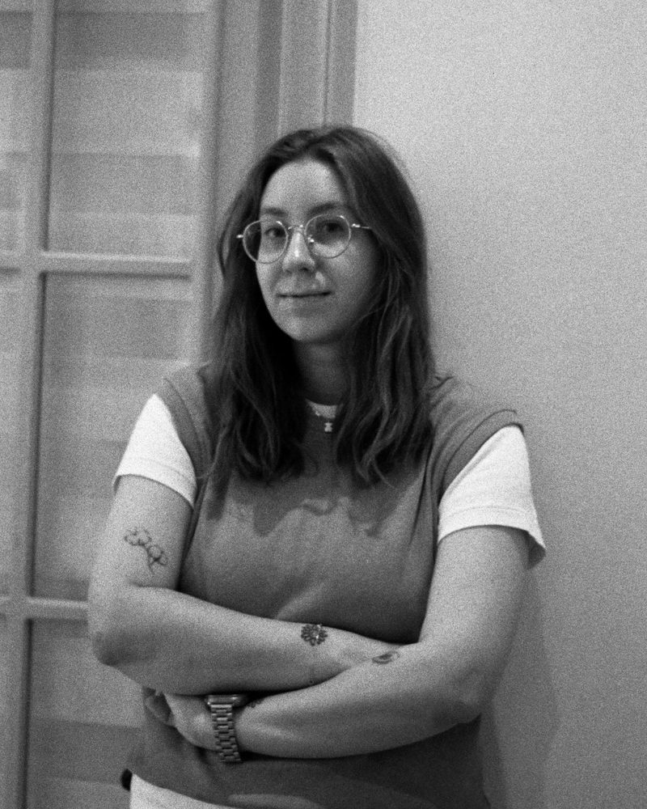

Работаю со взрослыми индивидуально: очно в Ташкенте и онлайн из любой точки мира. Спокойно, бережно, с опорой на научные методы.
Записаться на встречу
Я Савченко Елизавета, психолог-консультант. Работаю со взрослыми в подходах КПТ (когнитивно-поведенческая терапия) и АКТ (терапия принятия и ответственности). Принимаю очно в Ташкенте и онлайн, из любой точки мира через Zoom.
Мое первое образование - факультет журналистики МГУ, именно там я научилась слушать и слышать, много работала в области социальной и международной журналистики. В психологию меня привел опыт социальной работы в благотворительной организации, где я увидела, что поддержка и вера в человека творят чудеса. А эмиграция и рождение ребенка стали теми факторами, после которых я прошла профессиональную переквалификацию по направлению "психолог-консультант". В настоящее время обучаюсь на первой ступени в гештальт-подходе.
Прийти можно и без четкого запроса: поддержки не бывает слишком много. Список неполный, поэтому, если вашей темы здесь нет, просто напишите мне, и мы это уточним.
Я не беру в работу случаи активного употребления психоактивных веществ, острого психоза и психиатрических диагнозов, требующих наблюдения врача (например, биполярного расстройства). Парную терапию я тоже не провожу, только индивидуальные сессии.
Если ваш запрос относится к этому списку, я подскажу, куда обратиться за психиатрической помощью.
Универсального сигнала, что пора к психологу, не существует. Но ждать, пока станет совсем тяжело, не стоит. Если вы читаете эту страницу, возможно, вы уже чувствуете, что в жизни что-то складывается не так, как хотелось бы.
Прийти можно, когда проблема захватила вас и справляться самому все труднее. А можно просто из интереса, чтобы увидеть, как проходит терапия, или узнать, как позаботиться о себе, когда в целом все хорошо.
Ничего особенного делать не нужно. Выберите место, где вам спокойно, и приходите с желанием поговорить о том, что сейчас волнует. Чтобы лучше понять вашу ситуацию, я буду задавать уточняющие вопросы.
Если удобно, заведите тетрадь или файл для заметок и заданий: к ним можно возвращаться между встречами.
Первая встреча в основном ознакомительная: мы подробно разбираем запрос, формулируем цели и намечаем стратегию.
Каждую следующую сессию мы начинаем с вашего самочувствия и событий прошедшей недели и вместе выбираем тему. Большие цели делим на небольшие шаги: на встрече мы занимаемся одним-двумя из них, отрабатывая когнитивно-поведенческие навыки. В конце подводим итоги и проверяем, в нужную ли сторону движемся.
После сессии я спрашиваю вашу обратную связь: подходит ли вам формат и о том ли мы говорили, что действительно важно. Если что-то смущало, я прошу сказать об этом. Отзывы я не собираю и не публикую.
По моему убеждению, терапия лучше работает, когда ограничена по времени, поэтому одна из задач - научить вас применять навыки самостоятельно. Сколько потребуется встреч, заранее сказать нельзя; когда цель станет близка, я предложу обсудить завершение. После этого можно договориться о поддерживающих встречах в свободном ритме.
Сессии проходят очно в Ташкенте и онлайн в Zoom.
35 $ · 2 800 ₽ · 400 000 сум
Скоро здесь появятся полезные материалы.
Перед записью можно ознакомиться с условиями работы:
Информированное согласиеАдрес кабинета: Ташкент, будет указан позже.